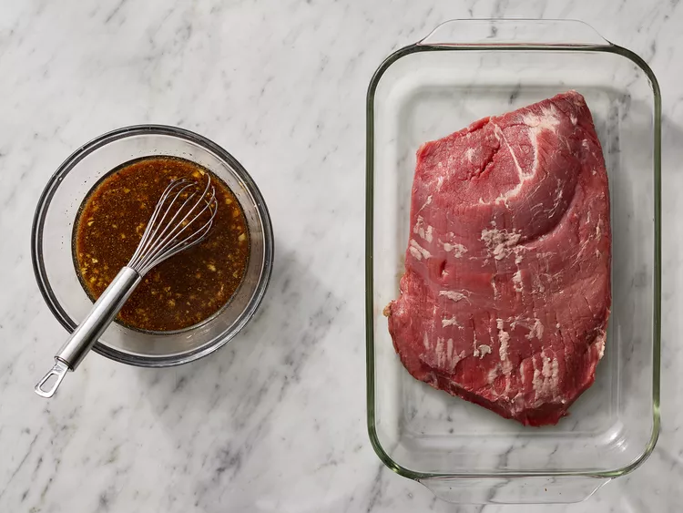
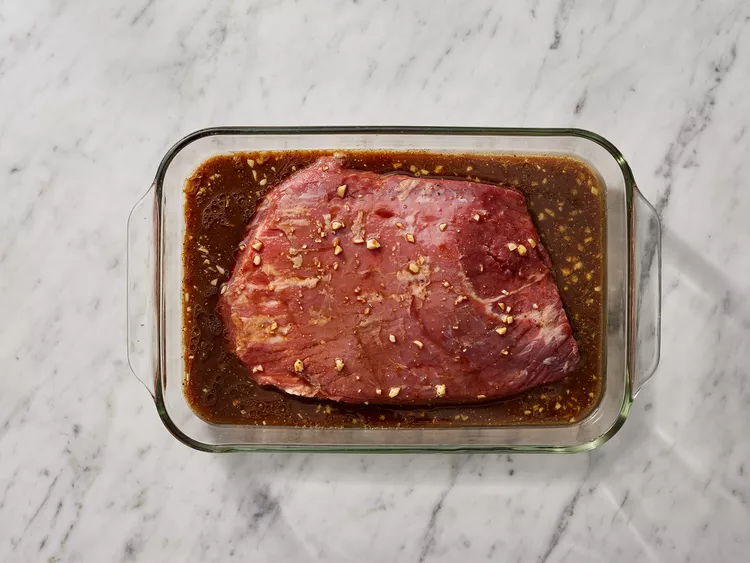
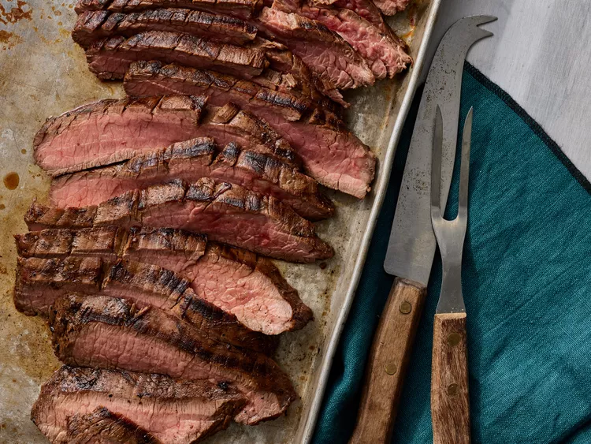

Marinated Flank Steak

Description
Make the best steak of your life with this top-rated recipe. A complex, savory flank steak marinade ensures perfectly tender and juicy beef every time.
Ingredients
Marinade
- ½ cup vegetable oil
- ⅓ cup low-sodium soy sauce
- ¼ cup red wine vinegar
- 2 tablespoons fresh lemon juice
- 1 ½ tablespoons Worcestershire sauce
- 1 tablespoon Dijon mustard
- 2 cloves garlic, minced
- ½ teaspoon ground black pepper
Steak
- 1 (1 1/2-pound) flank steak
Steps
- Gather all ingredients

- Whisk together oil, soy sauce, vinegar, lemon juice, Worcestershire sauce, Dijon mustard, garlic, and pepper for marinade until thoroughly combined. Place steak in a 9x13-inch glass baking dish.

- Pour marinade over flank steak in the baking dish; turn several times to coat thoroughly with marinade. Cover, and refrigerate for 2 to 6 hours, or up to 12 hours if you have time.

- When ready to cook, preheat an outdoor grill for medium-high heat and lightly oil the grate.
- Remove steak from the marinade and shake off excess. Discard the remaining marinade.
- Cook steak on the preheated grill for about 5 minutes per side, or to desired doneness.

- Remove from the grill and let rest for 5 minutes before slicing and serving.
- Serve hot and enjoy!
